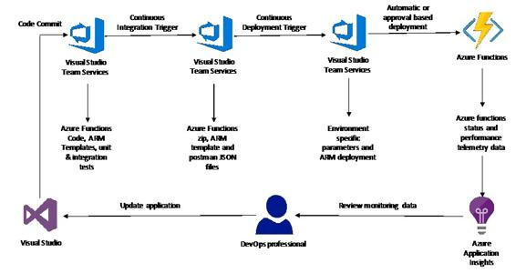

CI/CD for serverless applications
As discussed in the earlier section of this chapter, you can easily create serverless applications using Azure functions. It's easy to develop and deploy your Azure functions directly from the portal itself, however that's neither efficient from a team collaboration perspective and nor does it offer the possibility to automate the processes in-line with DevOps methodologies. So, to address that, Microsoft has a set of tools, specifically around VSTS integration with Azure functions, which makes it easy to orchestrate the entire CI/CD pipeline. There are more options as well from a deployment sources standpoint, such as Bitbucket, Dropbox, OneDrive and so on, but in this section we will focus more on VSTS, which is one of the most common methods.
Go to the following link for more details on Visual Studio tools for Azure Functions: https://blogs.msdn.microsoft.com/webdev/2016/12/01/visual-studio-tools-for-azure-functions/
Now, in order to effectively deploy the same Azure function to different types of environments, it's of utmost importance to separate out the core logic from the environment-specific configuration details. In order to do that, you can create an Azure functions type of a project from Visual Studio which has your core business logic in one or more functions. To manage environment-specific configuration aspects, these can be woven together in ARM templates. This also helps deploy stage-specific Azure functions in their own resource groups, which again brings a clear separation that's needed to meaningfully implement CI/CD processes.
The following is a high-level architecture diagram explaining the overall process:

As shown in the preceding diagram, in terms of the continuous integration process, there are three main steps such as are common for most projects, though these can be custom tailored as per individual requirements:
Once the CI process is complete, it's time to move to the continuous deployment phase. Usually, most customers have different phases in the pipeline, Dev, Test, UAT, and finally Production. All of these can be orchestrated using Visual Studio Team Services, where you can define the deployment process, which includes environment-specific configurations as well as the approval process. For lower-level environments, such as Dev and Test, most customers usually follow an automatic deployment process based on unit testing results, but for higher-level environments such as UAT and Production, it's a common practice to include a manual approval process to control gating procedures based on lower environments test results. To complete the DevOps loop, the final deployments are monitored using Azure Application Insights, which help with further refinement and application updates to improve application functionality across environments.